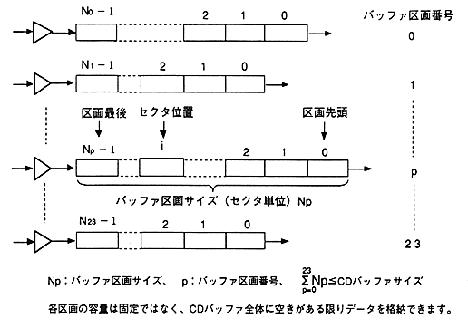

Return to previous page ｜ Return to menu ｜ Go to next page
-
5.3.2 Buffer section
-
(1) Buffer partition structure
- CD buffer is divided into multiple buffer sections. The structure of the buffer partition is shown in Figure 5.5.

Figure 5.5 Buffer partition structure
-
(2) Storing sectors in the buffer section
- The sector that enters the partition is stored at the end of the partition. The last sector position of the partition is equal to the buffer partition size minus 1. After storage, the buffer partition size is increased by one.
-
(3) Ejecting and erasing sectors from the buffer section
- When releasing a sector from a section, there are two ways to leave or delete the sector of the source section. (You can also instruct erasure only.)
For example, “Eject” and “Eject erasure” correspond to “Eject” to the host, and “Copy” and “Move” correspond to the inflow and outflow between the selectors.
-
(4) CD 1 sector interrupt and storage destination
- A 1-sector interrupt (CSCT flag of the interrupt factor register) in CD read occurs for each sector when the sector is stored (or erased) in the partition. The CD block stores the storage partition number of the last read sector, and the host can obtain the value.
∙ If the ECC count is set to multiple times, 1 sector interrupts may not occur at regular intervals. Multiple sectors may be stored at once for error correction.
Return to previous page ｜ Return to menu ｜ Go to next page